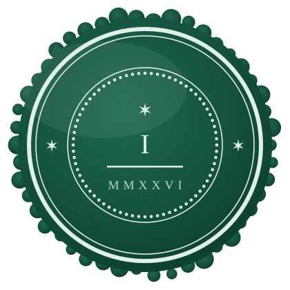

The deep dive, one of twelve
The first of twelve: why the race to become AI-native keeps forgetting half the story, why the position is written down in public rather than carried around in practitioners' heads, and why everything that follows rests on the oldest meaning of the word profess.
On Declaration I of the manifesto: A profession is a vow, not a job. By Chris Dias.

Twenty five years ago I was admitted as a solicitor of England and Wales. I had assumed I would mark the anniversary the way most solicitors mark theirs, which is to say by not noticing until somebody at a dinner did the arithmetic out loud. Instead I spent part of this year building a website, because there was an argument I could not put down.
The argument is not about whether AI is coming to legal practice. That question closed some time ago and anyone still litigating it is really negotiating their own retirement date. The machine can produce a competent first draft of an application, a letter or a research note in minutes, at a marginal cost near enough to zero that the old pricing conversation collapses. The most advanced new firms have been designed around that fact from their first day of trading, with the machine doing the first pass and lawyers supervising, rather than lawyers doing the work with machines assisting. The regulators have not stood in the way; the SRA has already authorised firms that deliver legal services through AI. I am not writing from behind a moat, and I want to be clear about that from the outset. Lawyery, the firm I co-founded, is going the same way, and I have spent the last stretch of my career building the tools rather than complaining about them.
What I could not put down was the other half of the story. Everywhere I looked, the race to become AI-native was being described as a purely operational problem: which workflows, which model, how much margin. There is a broad consensus forming across every domain of AI regulation that there must be a human in the loop, and I agree with it; my complaint is that in law it badly undersells the problem. In most domains the human in the loop can honestly mean a review and a button click, because the surrounding institution carries the accountability. Nobody seemed to be saying why law is different, and the answer sits inside a word the profession has stopped hearing properly.
There is a second reason I wrote it down, and it has to do with who is currently doing the imagining. To a technology company, law looks like any other services industry awaiting its software moment: documents in, documents out, high prices, slow delivery, margins wide enough to arbitrage. To the venture world the pitch writes itself; the next great vertical, a market measured in hundreds of billions, guarded by nothing more impressive than a guild and its habits. Part of that reading is simply correct, and no tears need shedding for the inefficiency the profession has sheltered. The error is subtler. It is to mistake the whole of law for its inefficiencies, and to look at what practitioners have curated over centuries and see only what they failed to streamline. The structures that look ceremonial are load bearing, and you cannot tell which is which from the outside.
So I wrote it down, in public, in twelve declarations, and put it on a domain of its own. That format is not a marketing conceit. Rome wrote the Twelve Tables because the plebeians refused to keep living under law that existed only in patrician memory; commitments written down where they cannot be quietly rearranged are the oldest legal technology we have. If the profession's position on the machine matters, it should be legible to the people it is supposed to protect, not carried around in the heads of the people it protects from.
Which brings me to the first declaration, and to the word itself.
Profession has been worn smooth. We say professional footballer and professional kitchen and mean only that someone is being paid. But profess comes from the Latin profiteri, to declare publicly, to avow before others; pro, forth, and fateri, to acknowledge, the same root that gives us confess. When the word arrived in English it had nothing whatever to do with employment. To be professed was to have taken the vows of a religious order, out loud, in front of witnesses, binding yourself for life to a rule you did not write and could not amend to suit your convenience. The profession was not the job. The profession was the vow.
Only later did the word attach itself to divinity, law and medicine, and it attached because those three did something structurally similar: their members declared publicly that they had mastered a body of learning, and bound themselves to duties standing above their own interest and above the market. A professional in the original sense is not somebody who is paid to do a thing. A professional is somebody who has professed.
That is not sentimental history. It is a live description of what happened to me, and to every solicitor and barrister reading this. We are admitted in open ceremony. Our names go on a public roll that anyone can search. We owe duties to the court and to the administration of justice that override our commercial interest and, where they conflict, override our client's instructions too. We are bound by rules and principles we did not draft and cannot negotiate. And what was professed can be taken back, because striking off is nothing more elaborate than the unmaking of the vow, performed as publicly as the making of it.
And it is not a matter of professional sentiment, either, which is the objection I expect and which this series will keep answering with citations rather than adjectives. The vow is the first thing the statute deals with. Section 1 of the Solicitors Act 1974 provides that no person may act as a solicitor unless admitted, on the roll, and holding a practising certificate; three conditions, none of which describe an ability, all of which describe a status publicly conferred. SRA Principle 2 then requires you to act in a way that upholds public trust and confidence in the solicitors' profession, which is a duty owed to the standing of the vow itself rather than to any client. The Bar's version of the same gateway is rI2 in the BSB Handbook, which prevents the regulator from waiving any rule so as to permit a person who has not been called to the Bar by an Inn to practise as a barrister. No call, no practice, and no discretion to soften it. Both regulators begin in the same place: not with what you can do, but with whether you have professed.
Everything a client trusts about us runs back to that single act. The confidence that becomes privilege. The advice that can be relied on. The signature that means somebody answers. None of it is a feature of the words on the page; it is a feature of the person who put their name under them.
Which is why the first declaration has to come first. Every argument in the eleven that follow is a consequence of it. If a profession were only a job, the machine would already have taken it, and the taking would be no great loss. It is not, and I have the certificate on the wall to prove where the difference lives. Nobody has ever framed a chatbot transcript.
Over the eleven posts that follow I will take the declarations one at a time, and in each of them set the declaration against the rules that already bind us, in the SRA Standards and Regulations and in the BSB Handbook. I am doing that deliberately, because the obvious objection to a manifesto like this is that it is special pleading, a profession dressing its self-interest up as a vow. The answer is that almost every declaration turns out to be an existing obligation restated, and that both regulators have already said as much about AI in terms without writing a single new rule. Nothing here asks for the profession to be rewired. It asks for a refresher, at the moment the machine makes it urgent.
Regulatory references throughout this series are to the SRA Standards and Regulations and the BSB Handbook as in force on 22 July 2026, including BSB Handbook version 5.0. Check them against the current published versions before relying on them. This is commentary and opinion, not legal advice.
A professional is not just someone who is paid to do something; a professional is someone who has professed.
Declaration I
Twelve declarations, taken one at a time, each set against the rules that already bind solicitors and barristers in England and Wales.
 professed
professed